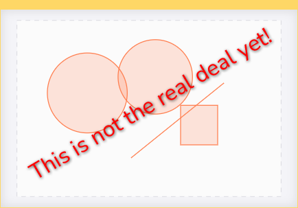

dapentry allows you to create rich, data driven visualisations without writing
code. This example ...

On this page, we'll introduce all tools available that will enable you to create similar
visualisation.
Drawing shapes
hit c to and draw a circle
Hotkeys
hit c to and draw a circle
Transformations
hit c to and draw a circle
Snapping
hit c to and draw a circle
Object snapping
hit c to and draw a circle
Editing statements
hit c to and draw a circle
The data editor
hit c to and draw a circle
Looping
hit c to and draw a circle
Iterating over data lists
hit c to and draw a circle